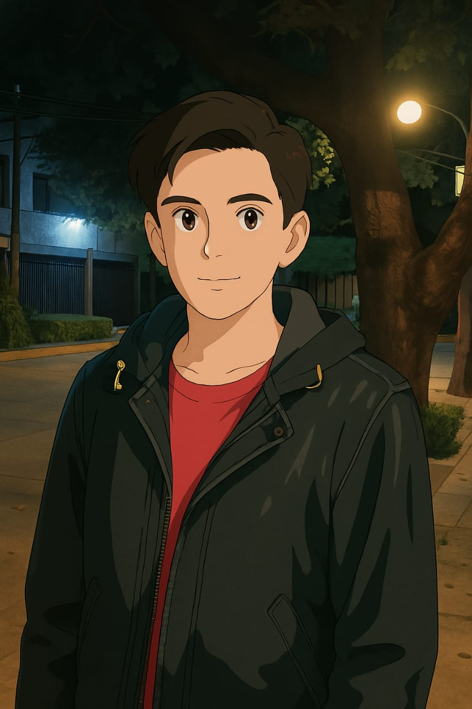
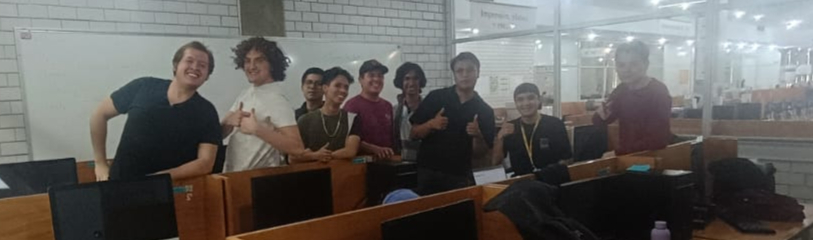

Atención hospitalaria
Simulación de flujos médicos para optimizar los recursos del hospital.

Movilidad en el Metro
Análisis de uso del transporte público.

Este proyecto busca conectar computadoras personales y así montar una red que sirva de lienzo para practicar este tipo de programación.
Simulación de flujos médicos para optimizar los recursos del hospital.
Análisis de uso del transporte público.